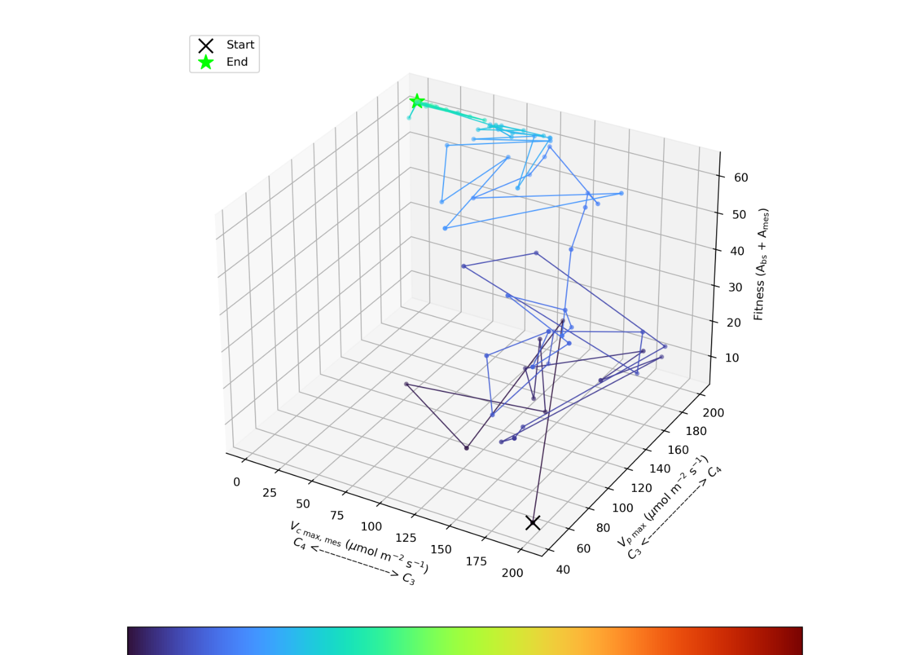
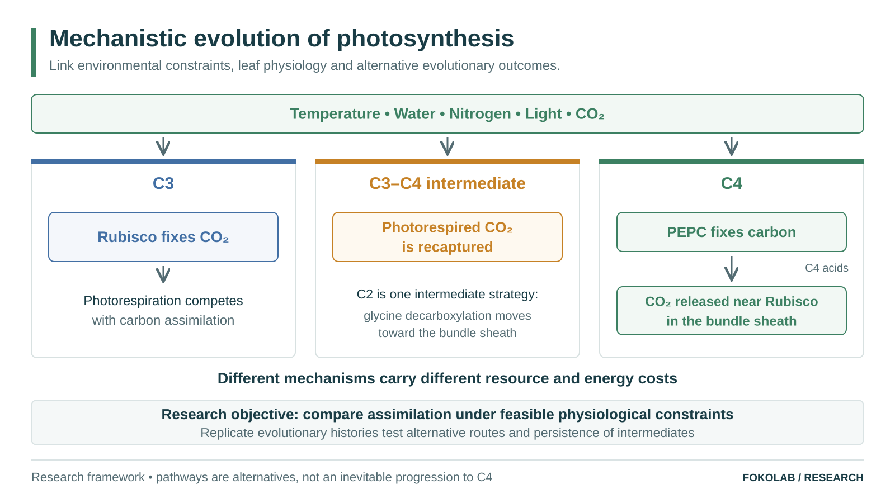

Sudan scenario
Archived trait-search simulation output; not interpreted as a reconstructed lineage.
Research programme · unpublished work
I study how biochemical, hydraulic, thermal, anatomical and resource constraints shape the evolutionary accessibility of photosynthetic phenotypes. This public page describes the scientific questions and strategy without publishing the full model.

Starting from plausible C3-like populations, which heritable changes can produce viable C3–C4 intermediate and C4-like phenotypes under different environmental histories, and which apparent routes disappear once physiological costs and uncertainty are represented?
Explore plant growth, climate responses and evolutionary trajectories. Open the interactive simulation-result explorer.

Archived trait-search simulation output; not interpreted as a reconstructed lineage.

Trade-off structure from the same research programme.

First- and total-order sensitivity under the specified uncertainty design.

Second-order interactions among uncertain model quantities.
The project examines the C3–C4 continuum, including photorespiratory intermediates where relevant to the biological hypothesis.
This research is ongoing. Selected figures and interactive simulations are available; the full model and calibration data are not yet released.
Jérémie Muller-Prokob and Yvonne Danisch are main collaborators. Yvonne made a substantial bachelor-thesis contribution to implementation, model execution, validation and analysis. Antonio Rigueiro and Jonas Brass are research collaborators; Jonas contributed to hydraulic discussions including water-temperature effects on conductance. Martin J. Lercher provides PI supervision and the research environment. I lead the project, modelling architecture and scientific integration.
Plant physiology overview · C3–C4 evolution overview · Research Hub · Methods & limitations